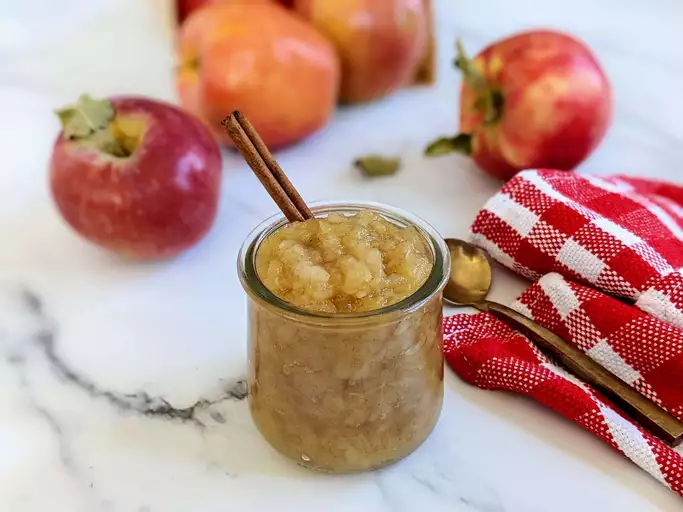

Applesauce

The worlds best hommade Applesauce
Ingredients
- 4 apples - peeled, cored and chopped
- ¾ cup water
- ¼ cup white sugar
- ½ teaspoon ground cinnamon
Steps
- Combine apples, water, sugar, and cinnamon in a saucepan; cover and cook over medium heat until apples are soft, about 15 to 20 minutes.
- Allow apple mixture to cool, then mash with a fork or potato masher until it is the consistency you like.